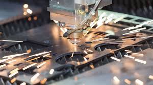

Eskişehir Osmangazi Üniversitesi Makine Mühendisliği mezunu. CAD/CAM tasarımı, CNC işleme, tolerans analizi, malzeme bilgisi ve kalite kontrol konularında yetkin.

Eskişehir Osmangazi Üniversitesi Makine Mühendisliği bölümünden 2024 yılında mezun oldum. CAD/CAM tasarımı, CNC işleme, tolerans analizi, malzeme bilgisi ve kalite kontrol konularında yetkinlik sahibiyim. Endüstrideki teknolojik yenilikleri yakından takip ederek, mühendislik becerilerimi sürekli geliştiriyor ve yenilikçi çözümler üretmeye odaklanıyorum.

Bölüm bitirme tezi kapsamında, AISI 316L paslanmaz çeliğin yüzey topolojisi ve mekanik özellikleri hakkında çalışma.

Termal bariyer kaplama teknolojileri ve bu teknolojilerin faydaları hakkında araştırma ve analiz çalışması.

Rüzgar türbinlerinin çalışma prensibi ve Türkiye’nin rüzgar enerjisi potansiyeli hakkında kapsamlı rapor.

Endüstriyel ürünler için CAD modelleme, katlama analizi ve üretim hazırlığı çalışmaları.
Sac metal parçalar için profesyonel CAD tasarımı, büküm ve üretim hazırlığı.
FDM teknolojisi ile PLA, ABS, PETG gibi malzemelerde 3D baskı hizmeti.
Fikirden fiziksel ürüne kadar modelleme, 3D baskı ve test süreci.
SolidWorks, Autodesk Fusion ve Siemens NX ile 3D parça tasarımı, montaj tasarımı, teknik resim hazırlama ve CAM programlama.
CNC freze, lazer kesim, abkant pres, kaynaklı imalat, kalite kontrol ve tolerans analizi.
Malzeme bilgisi, termal analiz, yüzey topolojisi analizi ve üretim süreçleri optimizasyonu.
PSM Plaster Systems / Ümraniye, İstanbul
ESAYSAN Endüstriyel Metal Ürünleri / Eskişehir
GPS Makine / Hacılar, Kayseri
Eskişehir Osmangazi Üniversitesi
Detaylı özgeçmişimi PDF olarak inceleyebilirsiniz.
CV’yi GörüntüleTürbin motoru tasarımı, termal analiz, imalat ve kalite kontrol alanlarında kapsamlı eğitim.
Hidrojen yakıtlı ve elektrikli araçlar hakkında teknik bilgiler edinilen eğitim programı.
Üretim süreçlerinde verimlilik ve israf azaltma teknikleri üzerine eğitim.
Sac metal parçaların tasarımı, katlama analizi ve üretim hazırlığı üzerine eğitim.
Benimle proje, tasarım veya üretim çalışmaları için iletişime geçebilirsiniz.